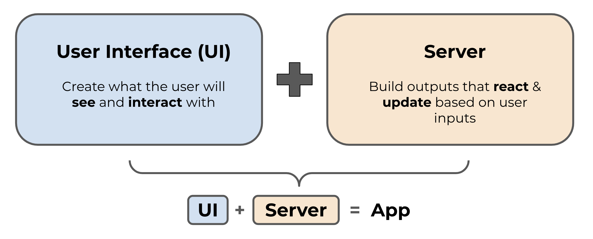
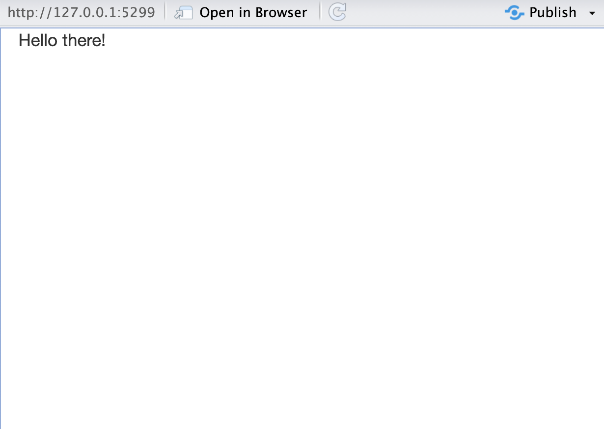
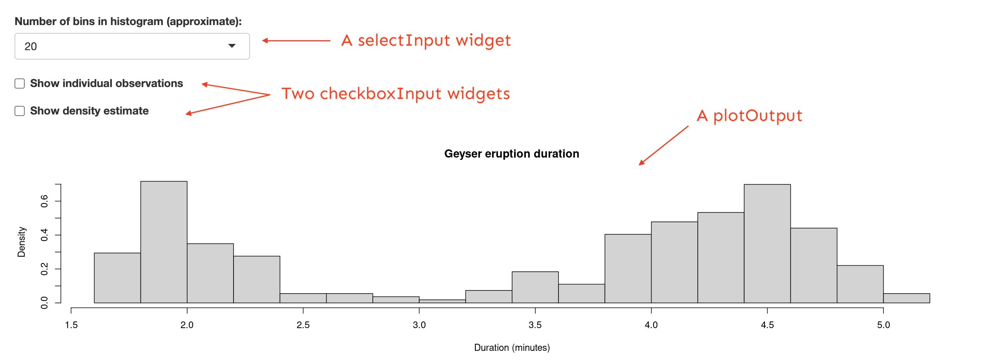
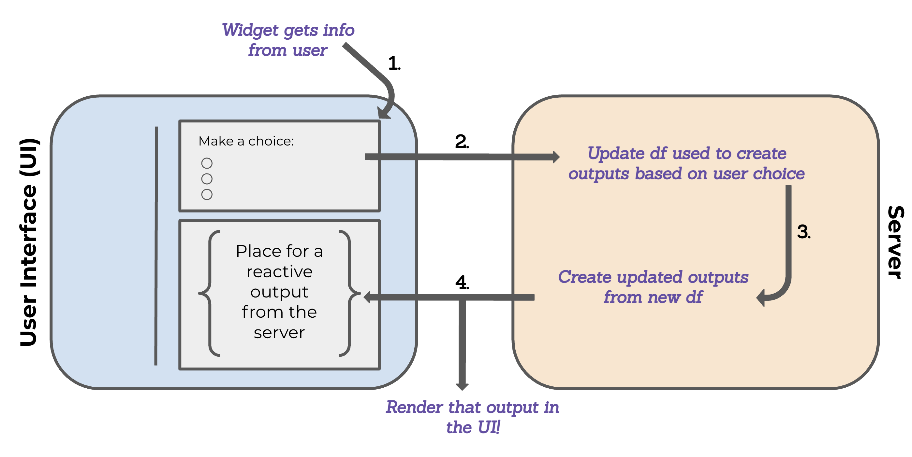

An R package that allows users to create an interactive web application using R code. This packages calls for HTML, JavaScript and CSS without you having to learn them.
Think interactive web pages built by people who love to code in R, no JavaScript experience necessary.
“Shiny is an open source R package that provides an elegant and powerful web framework for building web applications using R. Shiny helps you turn your analyses into interactive web applications without requiring HTML, CSS, or JavaScript knowledge.” - Posit
The big benefits of Shiny is that you create an interactive web application just by understanding the Shiny framework in R and present all the cool visualization you create using R packages in an interactive platform.
Why build a Shiny App?
Share data in an engaging format - allowing your audience to interact with your data. Example: HydroTech Helper by Daniel Kerstan. An app to access real-time monitoring of USGS hydrology sites.
To make tools you create in R accessible to others. Particularly those who do not know R. Instead of sharing your code, you share your app and everyone can see the output. Example: Marine Mammal Bycatch Impacts App by Dr. Margaret Siple. Source code
A web page that displays the app to a user (i.e. the user interface, or UI for short - frontend), and
A computer that powers the app (i.e. the server - backend)

Source: Intro to Shiny - Building reactive apps and dashboards, MEDS, UCSB
The UI controls the layout and appearance of your app and is written in HTML (but we use functions from the {shiny} package to write that HTML). The server handles the logic of the app – in other words, it is a set of instructions that tells the web page what to display when a user interacts with it.
Let’s take a look at how the code for a very simple Shiny app would look like to get a sense of the fundamental architecture of this tool.
library(shiny)# Define the UI1ui <- shiny::fluidPage("Hello there!")# Define the server2server <-function(input, output){ }# Generate the appshiny::shinyApp(ui = ui, server = server)
1
The fluidPage is a function that generates a page. It is important for allowing flexibility in UI layout which we’ll dive deeper later.
2
The server is actually a function with input and output as arguments. , where you’ll add all the code related to the computations.Because this app has no inputs or outputs, it doesn’t need anything in the ‘server’ component (though it still does require an “empty server”)
If we run the code above, we should see an app that is a blank white page with “Hello there!” written in the top left in plain text.

With this code we have essentially built a Shiny app. More complicated apps will certainly have more content in the UI and server sections but all Shiny apps will have this tripartite structure (Define UI, Define the Server and Generate the app).
What will go in each section?
Section
Component
UI
Layout - how the different components of the app are arranged.
Theme - defines the overall appearance of your app.
Inputs - or widgets ways the user can interact with (e.g. toggle, slide) and provide values to your app.
Outputs - The R objects that your user sees (e.g. tables, plots). Outputs respond when a user interacts with or changes an input value.
Server
Computations - code that will create the outputs displayed in your app (values, tables, plots, etc).
More on widgets and outputs
Widgets are web elements that users can interact with via the UI.
Widgets collect information from the user which is then used to update outputs created in the server. Shiny provides a set of standard widgets (see image below), but you can also explore widget extensions using a variety of other packages (e.g. {shinyWidgets}, {DT}, {plotly})
Outputs are R objects you will display on your app. This can be plots, tables, values, or others. Generally, these outputs are going to react to as the user interact with the inputs.
Example of input widgets and an output plot.

Source: Intro to Shiny - Building reactive apps and dashboards, MEDS, UCSB
Reactivity (in brief)
Reactivity is what makes Shiny apps responsive i.e. it lets the app instantly update itself whenever the user makes a change. At a very basic level, it looks something like this:

Source: Intro to Shiny - Building reactive apps and dashboards, MEDS, UCSB
How to understand reactivity?
Check out Garrett Grolemund’s article, How to understand reactivity in R for a more detailed overview of Shiny reactivity.
On file organization
Before we jump into RStudio to create a Shiny app there a couple more things worth mentioning about the structure of an app. First, when creating an app you have the option of either creating a single-file app or a two-file app. The in both cases look the same, however the difference is you either have all the code for you app (ui + server) in one script named app.R or you have 2 files, one for ui (`ui.R) and one for then server (server.R)
Source: Intro to Shiny - Building reactive apps and dashboards, MEDS, UCSB
Which one to choose?
It largely comes down to personal preference. A single-file format is best for smaller apps or when creating a reproducible example (reprex). While the two-file format is beneficial when writing large, complex apps where breaking apart code can make things a bit more navigable / maintainable.
Second, as we have learned through this course, it is always a good idea to create a GitHub repository + an Rproj to house all the moving pieces of our app. The image below presents a general repo structure to stay organized. We will follow this structure for the apps we will create during this lesson.
Source: Intro to Shiny - Building reactive apps and dashboards, MEDS, UCSB
Creating a Shiny app
Set up
Create a repo to house our soon-to-be app(s). Navigate to your GitHub account, go to Your repositories > Click on New repository. Named it shiny-app-example Remember to initiate your repo with a README and choose R as the language for the default .gitignore.
Clone your repo into your RStudio Session in the server. Click on the green “< >Code” button > Copy the HTTPS url and then go to RStudio
In RStudio Create a new project. Go to File > New Project > Version Control with Git > paste Repository url > Create Project
The GIF bellow shows each of these steps as a visual reference. Thank you Sam Csik, who created this great resource!
1-file simple app (30 min) -
Exercise 1 (15 min)
Exercise 2 (15 min)
Additional Boilerplate apps / templates
Shini cont’
2 file app (live code and follow) – Palmer penguin or Dog app? (40 min)